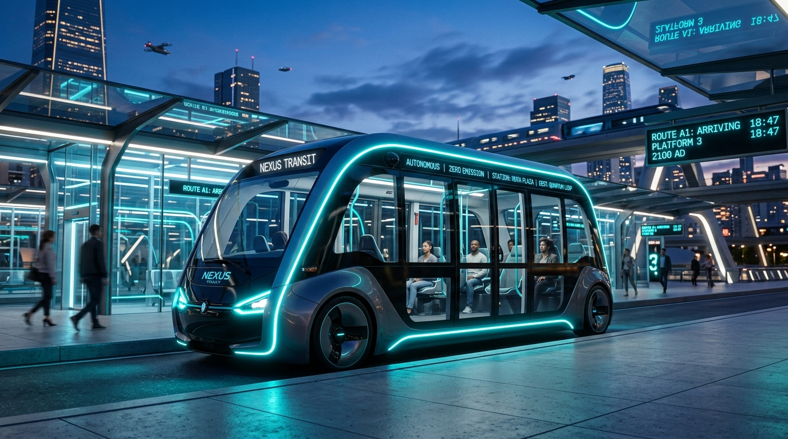
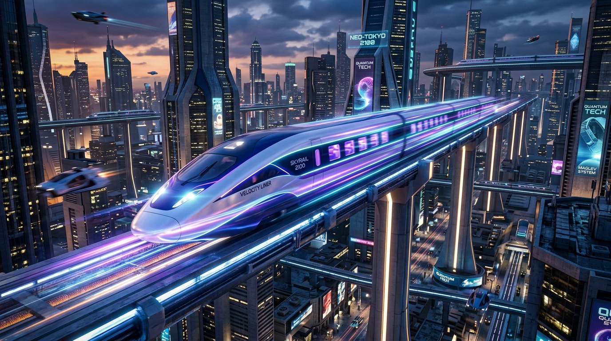
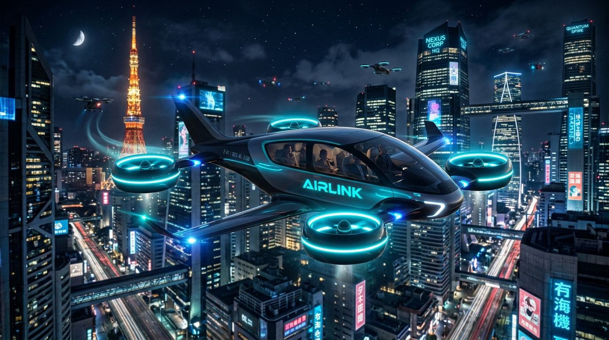
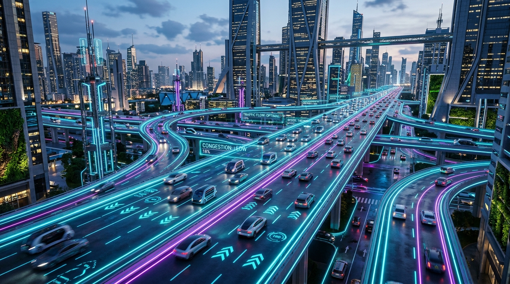

Live • 2 min away
AUTONOMOUS BUS
Zero-driver urban pods with level-boarding, automated accessibility ramps, and local loop synchronization.
Plan, connect, and experience seamless transportation across the smart city of 2100. Autonomous multi-modal routing synchronized in real time.
Zero drivers, zero delays, and continuous synchronization. Every vehicle connects instantly into your single journey pass.

Zero-driver urban pods with level-boarding, automated accessibility ramps, and local loop synchronization.

High-speed magnetic levitation rail network connecting metropolitan sectors in minutes with zero track friction.

Urban aerial eVTOL transit corridors providing rapid point-to-point transit across water and high-density towers.

Inductive dynamic-charging cyber roads managed by distributed AI to eliminate congestion bottlenecks.
Every vehicle. Every route. Every connection. The AeroFlux central AI continuously rebalances transit dispatching, eliminating missed transfers before they occur.
Designed for everyone. Full accessibility is integrated into the core journey engine, never treated as an afterthought.
Adjust visual scale and legibility across all stations, timings, and instructions.
Switch to high contrast OLED mode with heightened borders and maximum clarity.
Disable background grid scrolling, pulsing glow indicators, and live vehicle loops.
Personalize AI routing filters to match your exact mobility and sensory requirements.
Choose which AeroFlux real-time updates you receive.